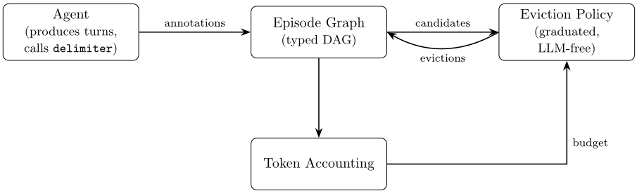
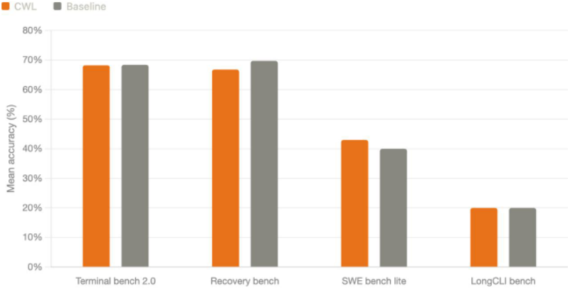

超越 Compaction：面向长时程 Agent 的结构化上下文驱逐
长时程 LLM Agent 的轨迹持续累积而上下文窗口有限，主流的摘要式 compaction 存在不可预测的有损性、破坏因果结构、阻塞式模型调用成本和压缩诱发幻觉四大缺陷，按时间截断则语义盲视。论文提出 Context Window Lifecycle（CWL）：Agent 在工作过程中用 delimiter 工具将轨迹标注为带依赖关系的探索/行动 episode，累积成类型化 DAG；token 超预算时由确定性、不调用 LLM 的驱逐策略按依赖图优先级渐进清除内容，始终保留用户轮次与活跃上下文。在四个基准上，单会话连续完成 89 个任务、累计 8000 万 token，任务准确率与逐任务独立会话基线相比无可测退化；将预算上限 τ 封顶在 80k token 可带来 20-70% 的推理成本降低，跨任务依赖案例研究中比 compaction 低 23% 成本。这是上下文工程与 Agent harness 设计的直接工程参考。
长时程 LLM Agent 的上下文窗口有限而工作轨迹无限：每次工具调用、文件读取、检索文档都在消耗有效推理预算。现有方案中，摘要式 compaction 存在四个已知局限（不可预测的有损性、破坏因果结构、阻塞式模型调用成本、压缩诱发幻觉），recency truncation 则语义盲视、可能驱逐仍在使用的关键上下文。论文要解决的是如何在固定 token 预算内让单会话 Agent 长期运行而不损失连贯性与任务准确率。
CWL 由三个组件构成：(1) 标注协议——Agent 通过单一 delimiter 工具在 episode 边界打标，区分探索与行动两类 episode，并在开启行动 episode 时声明其依赖的探索 episode；(2) episode graph——标注累积为类型化有向无环图，维护封闭性、非 prologue、非活跃等不变量，活跃 episode 永不驱逐；(3) 驱逐策略——token 超预算时确定性运行，优先驱逐最老的、其依赖者已全部被驱逐的行动 episode（其效果已持久化在环境中可重建），再处理探索 episode，按 STRIP_REASONING→STRIP_BULK_OUTPUT→STRIP_INTERMEDIATE→REMOVE_EPISODE 的递进层级执行，用户轮次绝不驱逐。设计遵循六条原则，核心包括：压缩是协议的一部分而非补救动作、因果依赖优先于时间新近性、压缩不调用模型。实现为开源 agent harness pi.dev 的 fork 扩展，代码公开。
Terminal Bench 2.0（n=5）：CWL 单会话 68.25% vs 逐任务独立会话基线 68.40%；SWE Bench Lite 50 任务子集（n=3）：43.00% vs 40.00%；Recovery Bench（n=3）：66.80% vs 69.75%；LongCLI Bench（n=3）：20.00% vs 20.00%；所有差异不超过 3 个百分点、在运行方差内，即无可测退化
单会话连续完成 89 个任务、累计处理超过 8000 万 token，总推理成本约 $55/完整运行
将预算上限 τ 封顶在 80,000 token（约为被测模型上下文窗口的 30%）使推理前缀稳定，相对未封顶会话推理成本降低 20-70%，具体取决于任务结构（迭代代码编辑类受益最大，工具输出高度可变的会话受益最小）
预算敏感性实验表明 τ ∈ [80,000, 120,000] token 接近所测任务的 Pareto 前沿：继续降低以时间换成本，继续升高增加成本而不增加能力
跨任务依赖案例研究（Excalidraw、Redis、Linux kernel，各 3-4 个递进任务）：CWL 比 harness 默认 compaction 推理成本低 23%；Linux kernel 任务中 CWL 保留了 compaction 丢弃的结构性细节，基线需额外重复探索才能完成任务 2
与摘要式 compaction 相比，CWL 的压缩是增量式、确定性且不调用模型的，成本支付在运行时的标注纪律而非阻塞式大摘要调用，从构造上避免压缩诱发幻觉；与 recency truncation 相比，驱逐按依赖图中'最老且最可恢复'而非时间最老；与 Context-Folding 相比，CWL 无需 RL 训练特定模型（模型无关）、依赖图可表达任意深度因果链（而非两级层级）、触发是显式响应式的 token 计量而非隐式学习行为。核心新意在于让 Agent 在工作当下自我标注轨迹结构（谁最清楚哪些是活上下文、哪些是效果已持久化的行动记录），由确定性策略消费该结构。
相关度级别：high
命中能力域：3.1 上下文工程与记忆 | 3.3 Agent 架构与工具使用 | 3.5 评测与可靠使用
理由：论文直接命中 3.1 上下文工程与记忆的核心技术：上下文窗口管理与压缩、结构化上下文组织、长时程会话的上下文预算管理，正是团队'把模型用好'关注的核心问题。同时命中 3.3：论文在 pi.dev fork 的 agent harness 中实现、新增 delimiter 工具、研究单 Agent 长时程执行可靠性；并命中 3.5：给出四基准评测方法与更严苛的单会话协议、KV cache 与 τ 调优带来的 20-70% 成本优化。团队构建代码生成/审查、知识库问答等 Agent 工具时必然遇到长会话上下文膨胀，CWL 提供了无需训练、模型无关、可工程化落地的 compaction 替代方案。
建议动作：深入精读并做内部分享
arXiv:2606.11213v1 [cs.CL] 2026年5月1日
Andrew Semenov ∗ Kiz8
ands@kiz8.team · andysem3@gmail.com
2026年4月21日
我们提出上下文窗口生命周期（Context Window Lifecycle，CWL），这是一种上下文管理方案，为长时程大语言模型（LLM）Agent 提供实际上无界的工作时域。随着会话不断累积历史，CWL 通过分级的、语义感知的逐出（eviction）使上下文始终保持在预算之内：Agent 在工作推进过程中将其轨迹标注为带类型、以依赖关系相连的情节（episode），而当超出 token 预算时，一个确定性的、不依赖 LLM 的策略会在该结构内按优先级顺序逐出内容。CWL 保留用户轮次以及 Agent 正在其上进行主动推理的探索性上下文，同时积极清除其效果已经持久化到环境中的动作情节，使活跃上下文保持在接近某个稳定上限的水平——该上限本身低于注意力开始退化、幻觉率开始上升的区域。
与基于摘要的压实（compaction）相比，CWL 避免了四个众所周知的局限：不可预测的有损性、因果结构遭到破坏、阻塞式的模型开销，以及压缩诱发的幻觉。与基于新近性的截断相比，CWL 具有语义感知能力：它依据依赖图丢弃最旧且最可恢复的内容，而不是不考虑相关性、单纯按时间先后丢弃最旧的内容。我们描述了标注协议、情节图、逐出策略以及 token 记账循环——并通过实证加以展示：单个 Agent 会话在 8000 万 token 的跨度内完成了 89 个顺序任务，且相对于逐任务隔离会话，任务准确率没有可测量的下降。
长时间运行的大语言模型（LLM）Agent——编程助手、研究型 Agent、使用工具的工作流——面临一个结构性问题：上下文窗口是有限的，而工作的轨迹却不是。每一次工具调用、每一次文件读取、每一份检索到的文档都会累积到历史记录中，模型的有效推理预算随每一轮而缩减。若不加干预，会话要么在窗口填满时终止，要么开始静默丢弃最旧的内容，而使后续决策保持连贯所需的上下文也随之被一并丢弃。
目前主流的干预手段是压缩（compaction）：当历史记录接近窗口上限时，Agent 被暂停，累积的会话记录被交给一个 LLM 并附上对其进行总结的指令，
∗ 通信地址：andysem3@gmail.com（永久个人地址）。
Svyatoslav Dorofeev Kiz8 sean@kiz8.team 然后用总结替换原始历史记录。随后，Agent 在这一压缩后的基底上恢复运行。压缩的吸引力在于其简单性——它不需要对交互作任何结构性假设——而且它如今已是若干广泛使用的 Agent 框架中的默认做法。
1
基于总结的压缩有四个众所周知的局限性，而每一个都会在其被触发的条件下——任务中途、token 压力之下——进一步加剧：
上下文窗口生命周期（CWL）解决了这些局限性，并提供了此前两种方法均无法实现的能力：一个能够无限期运行而不损失连贯性的长程 Agent。CWL 既不把会话记录当作一个填满后即被总结的不透明整体，也不把它当作一个从队首截断的队列，而是把它当作 Agent 边工作边标注的结构化工作记录。当超出预算时，一个确定性策略会遍历该结构，并按优先级顺序逐出内容——从最可恢复的内容开始，必要时以整个情节收尾。
关键洞察在于：Agent 恰好处于标注自身轨迹的最佳位置——在执行工作的当下，它知道哪些部分是它仍然需要的活跃上下文，哪些部分是其效果已经写入环境的动作记录，并且它知道某个给定动作依赖于哪些探索。CWL 为 Agent 提供了一个单一的分隔符工具，用以增量式地表达这一结构，而压缩策略则对其加以利用。
2
本文范围。这是 CWL 的首个发布版本。本文完整呈现了其设计、架构与初步实证结果。更大规模的评估——包括额外的基准测试（benchmark）套件、更高的运行次数以及扩展的消融实验——计划在后续版本中进行。我们此刻发布，是为了确立该方法，并使其设计决策清晰可读，便于他人采用、批评或在其基础上继续构建。
在描述架构之前，我们先阐述指导这一架构设计的原则。这些并非本文将要证明的论断，而是该设计旨在恪守的承诺，后续的每一项决策都可以追溯到其中某一条原则。
原则 1（压缩是协议的一部分，而非恢复动作）。Agent 并不是先正常运行、待上下文填满之后再调用修复。它在压缩持续进行的前提下运行，对自身轨迹进行标注以支持压缩，并且永远不会遇到必须对上下文进行抢救的状态。
原则 2（Agent 是结构的权威）。系统尽可能少地对对话记录的含义进行推断。片段（episode）边界、片段类型以及依赖关系，均由 Agent 使用专用工具显式声明。
原则 3（用户内容不可侵犯）。无论 token 压力有多大，由人类参与者撰写的内容都绝不会被逐出。如果在不触及用户轮次的情况下无法满足预算，系统会将该状况显式呈现出来，而不是默默降级。
原则 4（因果依赖优先于新近性）。一个被近期决策所依赖的旧片段，比一个孤立存在的近期片段更有价值。逐出顺序遵循依赖图，而非时间线。
原则 5（压缩不得调用模型）。逐出策略的每一步都是确定性的且在本地执行。这从构造上排除了由压缩引发的幻觉，并使一轮压缩的成本实际上保持为零。
4

原则 6（渐进式，而非灾难式）。压缩以能够满足预算的最小增量逐步推进。面对溢出，第一响应是剥离单独一条最易恢复的内容，而不是重构整个会话。
CWL 包含三个组件：(i) 一套标注协议，Agent 在工作过程中借助它标记片段边界与依赖关系；(ii) 一个片段图，在整个会话期间将这些标注累积为一棵类型化的有向无环图（DAG）；以及 (iii) 一个逐出策略，每当 token 计量表明预算已被超出时便会被调用。图 1 勾勒了三者之间的关系。
我们依次描述每个组件。
Agent 被赋予一个单一的工具，即 delimiter。它不产生任何影响任务行为的输出；其唯一目的是对轨迹进行分段。该工具接受以下 schema：
5
因此，四种规范调用为：
1. 开始探索：{"action":"start","name":"...","type":"expl"} 2. 开始动作：{"action":"start","name":"...","type":"act","dependencies":["expl-a",...]} 3. 结束探索：{"action":"end","description":"..."} 4. 结束动作：{"action":"end"}
片段类型。区分两种类型：
依赖声明。当 Agent 开启一个动作片段时，它会通过 dependencies 字段声明其所依赖的探索片段——即一个由先前已闭合的 expl 片段名称组成的列表，动作片段正在消费这些片段的信息。
这编码了这样一个事实：动作片段的正确性依赖于相应探索片段确已发生，而正是这一点使得逐出策略能够保留因果前件（原则 4）。探索片段不声明依赖——按照设计，探索是前沿，其背后没有任何东西。
这些注解会不断累积，构成一个有向无环图 G = ( V, E )，其中顶点 v ∈ V 是片段，而边 ( u, v ) ∈ E 表示动作片段 v 声明了对探索片段 u 的依赖。该图在正常运行期间是只追加的（append-only）；压缩会移除节点，但从不改动边。
在任何时刻都维持着以下三条不变量：
6
第四项状态是活跃片段（active episodes）的集合：即那些已经发出了定界符 start 调用、但相应的 end 调用尚未到达的片段。活跃片段永远不符合逐出条件——Agent 正处于使用它们的过程中。
当 token 统计报告当前上下文超过所配置的阈值时，逐出策略便会运行。它以循环方式工作：每次迭代执行一次可能有所帮助的最小幅度逐出，然后重新检查预算。一旦预算得到满足，或不再存在可行的逐出操作，循环即退出。在单次迭代中，该策略会考察所有符合逐出条件的片段——已关闭、非序言（non-prologue）、且没有尚未被逐出的依赖者——并按照一条简单规则选出要处理的片段：若存在符合逐出条件的最旧动作片段，则选择它；否则选择最旧的符合逐出条件的探索片段。动作优先于探索的优先级反映了两类片段各自所包含的内容：探索片段保存着 Agent 进行正确推理所需的累积上下文信息——搜索结果、文件内容、环境状态——而动作片段主要记录编辑与写入操作，其效果已经持久化在环境中，可以通过检查环境来重建。依赖约束是不那么显而易见的部分。只有当每一条满足 ( u, v ) ∈ E 的动作片段 v 自身已被完全逐出时，探索片段 u 才符合逐出条件。这防止了如下情形：探索片段被丢弃，而依赖它的某个动作片段仍留在上下文中——在这种状态下，Agent 虽然留有决策记录，却无法访问产生该决策的推理过程。在选定的片段内部，内容按照激进度递增的有序级别被逐步剥离。每一级都会被尝试执行，随后重新评估 token 用量，若预算已满足则循环退出。这些级别
如下：
在整个过程中，用户轮次（user turns）被原样保留，因为它们定义了长程轨迹以及来自用户的真实（ground-truth）需求与指令（原则 3）。Algorithm 1 给出了伪代码。
7
输入：episodeGraph、tokenBudget
1: while countTokens(episodeGraph) > tokenBudget do // 候选：已关闭且其所有依赖者均已被驱逐的片段
2: candidates ← episodeGraph 中满足 episode.isClosed 且非 episode.isPrologue 且非 episode.isActive 且 episode 的所有依赖者均已被完全驱逐的片段
3: if candidates.isEmpty() then
4: break ▷ 没有可安全驱逐的内容；预算无法满足
5: end if // 优先选择动作型片段（其效果已持久化）而非探索型片段
6: target ← candidates 中最早的 ACT 片段，若不存在 ACT 则取最早的 EXPL 片段
// 从破坏性最小到破坏性最大的级别依次尝试剥离
7: for level in [ STRIP REASONING , STRIP BULK OUTPUT , STRIP INTERMEDIATE , REMOVE EPISODE ] do
8: if level 适用于 target.type then
9: 按 level 剥离 target：移除内容
10: if countTokens(episodeGraph) ≤ tokenBudget then
11: return ▷ 预算已满足
12: end if
13: end if
14: end for
15: end while
在最坏情况下，处于最大利用率的 CWL 对缓存而言是净负收益的：花费在那些随即就会被丢弃的缓存写入上的开销，超过了无缓存推理本会花费的开销。从狭义上讲，这比压缩（compaction）更糟——尽管压缩存在其他种种缺陷——它在每轮压缩之后都会产生一个单一而稳定的前缀，并能将缓存命中率一直维持到下一轮压缩之前。而 CWL 的渐进式、增量式驱逐则更频繁地使前缀碎片化。
在我们的基准测试中，我们发现了一种潜在的解决方案，尽管它并非没有进一步的权衡。我们将 token 预算上限记为 τ，并将其封顶在 80,000 token——约为被评估模型上下文窗口的 30%。由于驱逐使活跃 token 数量稳定在该上限附近，而非任其增长至整个窗口，推理引擎所见的前缀在各轮之间实际上是恒定的：新内容在尾部添加，同时等量的内容在头部被驱逐，而前缀中稳定的主体部分则不断累积缓存命中。其结果是，与未设上限的会话相比，推理成本降低了 20-70%，这一区间反映了任务类型与会话性质的差异：具有重复性、结构相似轮次的任务（例如迭代式代码编辑）受益最大，而工具输出高度多变的会话受益最小。设定 τ 是一个具有三个维度的调节旋钮：成本（较低的 τ 通过稳定前缀来降低每轮推理成本）、回溯能力（较低的 τ 会更早驱逐内容，对于天然回溯窗口较长的任务，这将要求重新探索），以及模型质量（较低的 τ 使提示保持在注意力与幻觉率均处于有利水平的区间内）。第一和第三个维度都倾向于较低的 τ；只有第二个维度与之相悖。这意味着这一权衡并不像纯粹“成本对能力”的框架所暗示的那样严峻：更紧的预算同时更便宜且在质量上更优，直至必要的回溯能力受到损害为止。最优的 τ 取决于工作负载，但质量维度主张宁可偏向较低的值，而非较高的值。
9
我们将 CWL 实现为开源智能体运行框架（harness）pi.dev 的一个 fork 上的扩展；该实现已在 https://github.com/Kiz8-Team/pi-cwl 公开提供 [6]。该 fork 在智能体的工具集中加入了 delimiter 工具，在 harness 进程中维护 episode graph，并在每轮 token 计量之后运行逐出策略。所有实验均使用 GPT-5.4 作为底层模型。
除 CWL 集成之外，我们还进行了若干 harness 层面的优化，这些优化显著降低了基线 token 消耗，其本身也值得专门描述：
这些优化还产生了一个与 CWL 评估相关的次级效应：综合起来的 token 效率使得智能体在较短的基准测试（benchmark）上难以超出 80,000 token 的预算，这一点为下文评估协议的设计提供了依据。
我们在四个基准测试上对 CWL 进行了评估：Terminal Bench 2.0 [8]，一套包含 89 个智能体任务、涵盖基于终端的编码与系统交互的任务集；SWE Bench Lite [4]，在从完整的 300 个任务集中随机抽样的 50 个任务子集上进行评估；Recovery Bench [1]，测试智能体在任务中途从失败状态恢复的能力；以及 LongCLI Bench [3]，涵盖长时程命令行交互任务。
10

协议。所有四个基准测试的标准评估协议均在独立、全新的智能体会话中运行每个任务。这使各任务彼此隔离，但无法对上下文管理进行锻炼——没有任何会话能积累足够的历史来接近任何合理的 token 预算。
我们在每个基准测试上均为 CWL 条件统一采用了难度更高的协议：所有任务在单个不间断的智能体会话中按顺序执行，且 CWL 全程保持激活。会话从第一个任务开始；智能体完成该任务后直接进入下一个任务，期间不进行任何会话重置；episode 图累积完整的跨任务轨迹。基线条件则始终使用标准的逐任务隔离会话协议——每个任务使用全新的上下文，与所有已公开发布的排行榜条目所采用的协议一致。
这种不对称性正是评估的核心所在。基线从不面临上下文压力。CWL 条件则在固定的 80,000 token 预算下累积完整基准长度的轨迹。因此，与排行榜分数的比较并非同等条件下的比较：评估所关注的问题不是 CWL 排名如何，而是单个持续累积的会话能否在整个基准测试套件中维持任务性能。
我们报告跨独立运行的平均准确率：Terminal Bench 2.0 为 n = 5，其余所有基准测试为 n = 3。图 2 汇总了全部四个基准测试的结果。
各基准测试结果：Terminal Bench 2.0 —— CWL 68.25%，基线 68.40%；SWE Bench Lite
11
（50 任务样本）—— CWL 43.00%，基线 40.00%；Recovery Bench —— CWL 66.80%，基线 69.75%；LongCLI Bench —— CWL 20.00%，基线 20.00%。
在全部四个基准测试中，CWL 条件与基线条件之间的差异在任一方向上至多为 3 个百分点。这些差距处于运行间方差范围之内，不应被解读为方向性信号。主要结果在所有基准测试上均保持一致：尽管运行在严苛得多的条件下，CWL 相对于单会话基线在任务准确率上未产生可测量的退化。
Token 消耗与成本。在所有基准测试中，CWL 与基线在总 token 消耗或推理成本上几乎没有差异——较短的基准测试套件未能产生足够的持续上下文压力来形成可测量的差距。例外是 Terminal Bench 2.0：包含 89 个任务的单会话运行累积到了足以使该效应显现的规模——CWL 在整个序列上处理了超过 8000 万个 token，每次完整运行的总推理成本约为 55 美元。将活跃 token 数维持在接近预算上限的稳定水平——新内容从尾部进入，同时淘汰机制使前缀保持有界——相对于无上限会话降低了每轮推理成本。相对于无上限会话，观察到的成本降低幅度为 20-70%，具体取决于任务结构；其机制与该范围将在第 5 节中详细讨论。
我们通过改变 τ 来刻画第 5 节所述的成本-能力权衡。主要发现如下：
这些结果表明，对于所评估的任务而言，τ ∈ [80,000, 120,000] token 接近帕累托前沿：减小 τ 可以换回成本，但以时间为代价；而增大 τ 则只增加成本，并不带来能力提升。对于具有更长自然回看窗口或代码探索结构较弱的工作负载，最优 τ 将有所不同。
Terminal Bench 2.0 的各个任务是相互独立的：即使在我们所采用的顺序协议下，每个任务也是自包含的，agent 无需记住关于任务 k - 1 的任何信息，也能在任务 k 上取得成功。为了探究 CWL
12
在真正的跨任务依赖下的表现——即后续任务要求 agent 在先前任务所产生的产物与决策之上继续构建——我们在真实世界的开源仓库上开展了一项针对性实验。这是一项定性案例研究，而非受控的基准测试（benchmark）；其目的在于具体展示：当因果性上下文必须跨任务边界加以保留时，结构化驱逐与压缩（compaction）有何不同。
实验设置。我们选择了三个上下文复杂度递增的仓库：Excalidraw（一个 TypeScript Web 应用）、Redis（一个以 C 编写的系统级代码库）以及 Linux 内核（一个带有自定义构建与测试流水线的大型 C 代码库）。针对每个仓库，我们设计了一个由 3-4 个任务组成的序列：这些任务要么直接建立在前序任务之上，要么共享了足够的结构性上下文，使得跨这些任务工作的模型能够从保留轨迹中获益。任务序列如下：
我们对每个仓库的任务序列各运行了两次：一次启用 CWL（τ = 80,000 token，单会话，GPT-5.4），另一次使用相同的 harness 与模型，但以 harness 默认的压缩机制替代 CWL。两次运行之间唯一的差异就是上下文管理策略。
Token 效率。CWL 的 token 效率显著高于压缩运行：尽管两者完成了相同的任务序列，采用 CWL 时的推理成本却降低了 23%。其机制与上文的基准测试评估相同：CWL 将活跃 token 维持在 80k 上限附近，并驱逐已完成的动作片段（episode），而压缩则任由上下文不断增长，直至触发某个阈值，然后用一份摘要替换历史——这是一次大规模的模型调用，其本身既消耗 token，又会重置 KV 缓存状态。
观察结果。各仓库的结果如下：
13
CWL 在尝试配置模拟器时陷入了循环；在人工协助化解这一僵局后，agent 完成了验证运行。压缩运行同样在 QEMU 配置上遇到困难，因为压缩已经丢弃了在先前任务中积累的构建与环境上下文，使恢复变得更加复杂。
最具信息量的差异出现在任务 2 中。CWL 保留了截至任务 1 的完整片段图（episode graph），并在实现 /proc 条目时直接访问了来自 syscall 实现的内核数据结构、辅助函数与注册模式。压缩运行的摘要生成过程在任务 1 之后触发，它保留了关于该 syscall 功能的文字描述，却丢弃了将 /proc 条目正确连接到该 syscall 所需的结构性细节。压缩运行只有在进行额外的探索性工具调用、重建了 CWL 原本完整保留的上下文之后，才完成了这一连接。
要点。Linux 内核案例具体展示了紧缩（compaction）造成结构性信息损失的代价。当基线的紧缩流程在任务 1 之后触发时，它丢弃了将 PID 系统调用实现与 /proc 条目相关联的因果结构——这正是第 1 节中所识别的失效模式。基线通过重新探索得以恢复，但代价是冗余的工具调用和额外的延迟。CWL 的 episode graph 则将结构细节完整保留，并在不产生额外成本的情况下将其传递给任务 2。23% 的推理成本降低，再加上避免了重新探索的开销，正体现了这一点：结构化淘汰在压缩上花费更少，在找回被压缩所丢弃的内容上也花费更少。
我们指出当前设计尚未解决的若干开放问题。
依赖粒度。该协议允许动作 episode 依赖于整个探索 episode，但不允许依赖于 episode 内部的特定工具调用。这是一种有意为之的简化；更细的粒度会使标注接口和淘汰策略都变得更加复杂。较粗的粒度在实践中是否足够，是我们正在评估的一个实证问题。
非线性轨迹。一些 Agent 会分支、回溯，或在多个并行子任务上运行。当前设计假设 episode 构成单一的线性流，仅通过依赖边来表达非线性。是否需要更丰富的结构（例如子图、子任务根节点）仍是开放问题。
对模型推理行为的影响。引入分隔符工具及其相关指令，可能会改变模型对探索进行推理和结构化的方式，且这种改变独立于淘汰策略本身。在评估中，我们观察到一系列行为变化，但无法将其确凿地归因于 CWL：在某些会话中，模型匆匆完成探索，其彻底程度低于没有 CWL 时的表现；在较长的会话中，它偶尔会过度探索，重复访问已标注的材料，或在动作之间循环而无明显进展。由于这些行为与常见的模型幻觉和规划失败相互重叠，我们无法在个别案例中将 CWL 隔离为其成因。我们暂时将其归因于标注协议所引入的轻度混乱——即模型在执行任务本身的同时还必须进行的一层额外元推理。如果这一归因正确，随着底层模型能力的提升，这种影响很可能会减弱；能力更强的模型应当能更好地将标注协议视为一种轻量的簿记义务，而非推理负担。
14
我们提出了 CWL，一种上下文管理方案，它为长时程 LLM 智能体提供了实际上无界的工作时域。CWL 建立在三个思想之上——智能体在工作过程中对其轨迹进行标注、这些标注构成一个类型化依赖图、以及当超出 token 预算时由一个确定性的分级驱逐策略遍历该图——从而从构造上规避了基于摘要的压缩（compaction）的四个众所周知的局限（不可预测的有损性、结构性破坏、阻塞性开销以及压缩诱发的幻觉），并通过使驱逐在语义上感知依赖图，将基于新近性的截断加以推广。每一项架构选择都可追溯到六项设计原则之一；实证评估表明，在一个 89 个任务、8000 万 token 的单智能体会话中，CWL 与每任务隔离会话实现了能力对等。